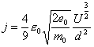

Christoph Karl Walter Grein
First edition 9 September 2002
Edition using Predicates and pragma Assertion_Policy
Last Update 14 July 2025
In Handling Physical Dimensions in Ada, there is an overview over methods how to deal with physical dimensions in Ada:
The method presented here is an update of the last bullet above. It uses dimensions as runtime attributes.
There is extensive documentation included as well as test and example code. This project has always been a challenge for the GNAT compiler, so there has been a plethora of bug reports and fixes on problems encountered with respect to many years of GNAT releases. If you use another compiler, I would be happy to hear about your findings.
In From The Big Bang To The Universe, I have shown that Ada is not suited to implementing physical dimensions with its type concept. Therefore a method was presented applicable also to hard real-time systems which gives up dimension checking within the SI units system, while keeping the advantages of strong typing in critical cases when units from different systems have to be mixed. And indeed, this method has been in use in several avionics projects.
But the request to have full dimensional checking persists. There are two basic ways one can try to solve the problem, either by adding to the numeric value its dimension as an attribute, or by using different types for different dimensions. Since the first method is runtime and memory consuming, whereas the second one is only compiletime-consuming, all effort naturally concentrates on the second method. This is doomed to fail as is shown in the paper cited above – although a plethora of overloaded operations is used, the result is not really satisfactory. Also see the attempt by the Ada Rapporteur Group to standardize such a method (Ada 95 Issue 324). Physical equations with all their powers and roots evade these attempts.
Since Ada 2012, there has been a very clever compiler-specific method by AdaCore, which handles physical dimensions at compile-time with implementation defined aspects (see a critical review of this method's achievements and shortcomings in my paper Physical units with GNAT, which has appeared in Ada User Journal 35.1).
So here a different method is presented to deal with physical items in full generality by adding to the value its dimension as an attribute, i.e. the first way rejected above because of its runtime-expensiveness. Hence this method might appear prohibitive for use in hard real-time systems. This might not be the case!
| By changing only the instantiation of one package, dimensions can be switched off, leaving the program, however big it may be, with only the pure numerics. |
The method comes in two variants, checked and unchecked, selected with a generic parameter:
Section one presents an overview of the method with its natural style to define dimensioned items. Dimension checking of course has runtime and storage effects, which might be prohibitive under hard realtime conditions. So its use is intended during software development and test phases only. When one hundred percent code coverage during unit testing is obtained, dimensions can safely be stripped, since dimensional correctness has then be proved.
Section two shows the few differences between the checked and unchecked variants. It also explains how to instantiate the packages so that with only one change in a generic signature package, the dimensions may be removed; the code proper remains unchanged.
Section three presents a comparison of computation time of the checked and unchecked variant.
An extensive documentation is included in the download as well as a lot of test programs and examples of use.
A physical item is a private type
type Item is private;
where the full declaration composes the item of a real value and a dimension, where the values for the seven SI base units Meter, Kilogram, Second, Ampere, Kelvin, Candela, Mole are rational numbers representing the exponent (e.g. m2). We have to use rational numbers because we want to be able to represent the most general physical equations.
type Dimension is record
m, kg, s, A, K, cd, mol: Rational;
end record;
type Item is record
Unit : Dimension;
Value: Real;
end record; |
As a side note: With a package like this, I guess a
compiler could evaluate the dimension strings in statements like
v:=5.0*"m/s"; at compile-time and also check the correct
dimensioning during compile-time (as long as there is no text input,
see below); in effect, this would mean a new kind of optimization
could be applied to throw away the dimension components.
This would remove the necessity of the unchecked variant (see below).(Most probably this is what GNAT does with its unit system – note that GNAT provides only dimensioned output, but no input.) |
The package Generic_SI is generic with respect to the numeric type, the type Real above is the generic parameter name.
Subtypes are provided for all units defined by the SI system, for instance:
subtype Length is Item with Dynamic_Predicate => has_Dimension (Length, "m"),
Predicate_Failure => raise Unit_Error with "Length";
subtype Volume is Item with Dynamic_Predicate => has_Dimension (Volume, "m**3"),
Predicate_Failure => raise Unit_Error with "Volume";
subtype Speed is Item with Dynamic_Predicate => has_Dimension (Speed , "m/s"),
Predicate_Failure => raise Unit_Error with "Speed";
subtype Force is Item with Dynamic_Predicate => has_Dimension (Force , "N"),
Predicate_Failure => raise Unit_Error with "Force";
Items (variables) are defined like this:
T: Time := 5.0*"s"; X: Item;
Item T, since defined to be of subtype Time, now is constrained to any
time unit like Second or Millisecond (initial values are optional).
For this to be true, of course you have to make sure
that pragma Assertion_Policy (Check); is set.
Item X is unconstrained and may assume any dimension.
This kind of declaration is recommended only for intermediate results.
Thus, provided that all items are dimensioned appropriately in their declarations, expressions like free fall or force on a charged particle in an electromagnetic field are checked for dimensional correctness - failures will raise exceptions:
D := 0.5 * G * T**2; F := Q * (E + Cross (V, B));
Here, Cross is the vector cross product, and E, V, and B are dimensioned three-dimensional vectors.
Of course mathematical functions like exp, log, exponentiation are also provided; for instance:
function Sin (X : Angle) return Dimensionless; function Sin (X, Cycle: Item ) return Dimensionless;
With one parameter only, the sine function requests parameter X to have unit "rad" (an angle, a pure number, i.e. dimension 1). With two arguments, it requests parameters X and Cycle to have the same dimension (this is checked by a Precondition of sine). Any violations will raise an exception. The result in any case is a pure number, an item of subtype Dimensionless. (In fact, "rad", "sr" and Dimensionless (the empty string is used "" to indicate the latter) are the same, the symbols "rad" and "sr" are only used to indicate that the numeric value denotes a plain or spherical angle.) Similar rules hold for the other trigonometric functions and their inverses.
Of course, dimensioned IO is also provided:
procedure Put (X : in Item;
Fore: in Field := Default_Fore;
Aft : in Field := Default_Aft;
Exp : in Field := Default_Exp;
Dim : in String := "");
Put for the numeric value is exactly like Ada.Text_IO. The Dim parameter may be used to provide a prefixed unit; if it is omitted, the unit will be output in a standard format:
V := 1.0*"m/s"; -- output as Put (V); -- 1.0*m*s**(-1) (standard format) Put (V, Dim => "km/h"); -- 3.6*km/h (note the value adaptation) Put (V, Dim => "s"); -- will raise exception (wrong unit Second)
Note that there are no string quotes in the output. The unit follows after a '*' or '/' character without space characters. This is necessary for input or else there would be no way to see where to stop reading, e.g. 3.6 km vs. 3.0 €. (3.0km is deemed ugly, and 1.0"km" is impossible in an Ada program.)
As you have gleaned meanwhile, any prefixed SI units may be used; please take care of correct capitalization: "Ms" is megasecond, "mS" is millisiemens. Case sensitivity of the SI units and prefixes is the reason why units are given with strings. There are two functions allowing numbers to be multiplied with unit strings:
function "*" (Left: Real'Base; Right: String) return Item; -- 1.0*"km" function "/" (Left: Real'Base; Right: String) return Item; -- 1.0/"s"
Note that the first operator is between the number and the unit string, any others are inside the string: 1.0*"m/s", 1.0*"A/m**2"; this is incorrect: 1.0*"m"/"s" and will not compile; of course 1.0*"m"/(0.5*"s") is correct.
Any whole or fractional powers are allowed.
function "**" (Base: Item; Exponent: Rational) return Item;
|  | While in SI all physical items have whole powers in their dimensions,
intermediate values may have strange units as can be seen for the
constant part in the Schottky-Langmuir equation, which has the value 2.33395*10-6 m-3kg-3/2s9/2A5/2. |
| Just for the fun of it, here are two unconventional units
(not included): 1 furlong / fortnight = 0.99785714285714 cm/min 1 inch = 2.54 cm 1 foot = 12 in 1 furlong = 660 ft = 201.168 m 1 fortnight = 1_209_600 s (14 days) If 1 inch were (2+54/99) cm, 1 furlong / fortnight would be exactly 1 cm/min. 1 km/h = 6 Mega furlong / fortnight In particle physics, the unit barn (which is allowed in mix with SI) is used for particle cross sections: 1 barn = 1.0E-28 m2 = (1.0E-14 m)2 = 100 fm2 |
Now a word in favour of the use clause is due. All examples you'll find in the download have been built with the use_package_clause in action for all instances. I can understand the reservation against the use_package_clause, but my personal feeling is neither use-hater nor use-lover.
However with such basic packages like the SI packages, things are very different. Your whole project will be built on their instances as the very basis, so it seems wrong to me to not use the use_package_clause mandatorily in all units depending on them. They in fact have the same level as package Standard (RM A.1), which is visible everywhere by default.
Thus your code should look like this:
package SI is new Generic_SI (Float);
package SI.Text_IO is new SI.Generic_Text_IO;
... any others ...
with SI.Text_IO;
use SI.Text_IO, SI; -- mandatory
package Application is
B: Magnetic_Flux_Density := 50.0 * "mT";
...
rather than without use clause
B: SI.Magnetic_Flux_Density := SI."*" (50.0, "mT");
or with only the use-type-clause
use type SI.Items; in action
B: SI.Magnetic_Flux_Density := 50.0 * "mT";
The unchecked variant is obtained by changing an actual generic parameter. In fact, the package Generic_SI has as second generic parameter a dimension signature package.
generic
type Real is digits <>;
with package Dimensions is new Dimension_Signature (<>);
package Generic_SI is ...;
By selecting the appropriate
Dimensions package
(True_Dimensions,
Fake_Dimensions),
you obtain the checked or the unchecked version.
Do not forget to set
pragma Assertion_Policy (...);
to the appropriate value Check or
Ignore.
Since the type Dimension declared in
Fake_Dimensions is a null record, the behaviour is different.
Of course, in an assignment D := 5.0*"km"; the prefix
'k' will be evaluated, so that the numeric value of the distance
is 5000.0; but dimensional correctness will no longer be checked in statements
as shown above in section 1 since assertions are not checked (further, the
subtype dynamic predicates are always true).
Also output will differ:
V := 1.0*"m/s"; -- output as Put (V); -- 1.0 (no unit available) Put (V, Dim => "km/h"); -- 3.6*km/h (note the unit) Put (V, Dim => "s"); -- 1.0*s nonsense
Here, the Dim parameter is handy – the prefix 'k' and the unit 'h' will still be evaluated and the value adapted accordingly. Of course the last wrong unit output cannot be prevented. So use this variant only for production code after you have carefully tested your code in the checked variant.
The checked version is storage consuming, fourteen integers for the
seven dimensions, one floating point number for the value.
Calculating all these numbers with each operation is time consuming.
Especially the dimension string evaluation is the most prominent time
eater, although statements like T := 20.0*"s";
are rare and occur mostly in initializing expressions.
Compile-time evaluation of these strings would therefore get rid of
only some part of the execution time.
Another source of unnecessary execution time could be the plethora of
functions in the generic dimension parameter packages, where the pragma
Inline most probably does not work across the package boundaries.
There is a program included to measure the computation time. Roughly, the unchecked variant is about 10 times slower than the pure numeric (only floating point) one. So do measure your program!
The Schottky-Langmuir equation is used for measurements because it includes different kinds of operations.
The software is published under the GNAT Modified GPL, version 3 or any later version. See GPL and the header of each compilation unit.
This work (for Ada 95) has been published in Softwaretechnik-Trends Vol. 22.4 (November 2002), the periodical of Ada-Deutschland, special interest group 2.1.5 Ada within Gesellschaft für Informatik, the German Informatics Society.
It has also been presented at the Ada Europe Conference 2003 in Toulouse.
A C++ solution (it did however not include fractional powers) with templates was presented at http://www.fnal.gov/docs/working-groups/fpcltf/. This page has disappeared meanwhile. The big difference to Ada's generics is that C++ templates with their implicit instantiations allow type checking during compile-time, so that no overhead neither in memory space nor in run-time is incurred. In this respect, C++ templates are more powerful than Ada generics. However at the time when the code was still there (11 February 2004), not all C++ compilers, although capable of compiling the code, were able to actually perform this type checking (as stated in the documentation of the method).
All about SI units and general information about the foundation of modern science and technology can be found at the National Institute of Standards and Technology Interntional Sistem of Units (SI) or Special Publication 811 and also at the Bureau International des Poids et Mesures The International System of Units (SI).
| Origin of prefix names | ||||
|---|---|---|---|---|
| Name | Symbol | value | derived from | meaning |
| quetta | Q | 1e+30 | ||
| ronna | R | 1e+27 | ||
| yotta | Y | 1e+24 | octo (Latin, Greek) | eight |
| zetta | Z | 1e+21 | septem (Latin) | seven |
| exa | E | 1e+18 | hexa (Greek) | six |
| peta | P | 1e+15 | pente (Greek) | five |
| tera | T | 1e+12 | teras (Greek) | monster |
| giga | G | 1e+09 | gigas (Greek) | giant |
| mega | M | 1e+06 | megas (Greek) | large |
| kilo | k | 1e+03 | chilioi (Greek) | thousand |
| hecto | h | 1e+02 | hekaton (Greek) | hundred |
| deka | da | 1e+01 | deka (Greek) | ten |
| deci | d | 1e-01 | decimus (Latin) | tenth |
| centi | c | 1e-02 | centum (Latin) | hundred |
| milli | m | 1e-03 | mille (Latin) | thousand |
| micro | µ | 1e-06 | micro (Latin) mikros (Greek) |
small |
| nano | n | 1e-09 | nanus (Latin) nanos (Greek) |
dwarf |
| pico | p | 1e-12 | pico (Spanish) | bit |
| femto | f | 1e-15 | femten (Danish, Norwegian) | fifteen |
| atto | a | 1e-18 | atten (Danish, Norwegian) | eighteen |
| zepto | z | 1e-21 | septem (Latin) | seven |
| yocto | y | 1e-24 | octo (Latin, Greek) | eight |
| ronto | r | 1e–27 | ||
| quecto | q | 1e–30 | ||
R, r, Q, q were adopted by the General Conference on Weights and Measures (CGPM) in November 2022.
u is normally used
where the Greek character µ is not available.
Also note that all symbols, prefixes and units, are case-sensitive.
| Origin of unit names | ||
|---|---|---|
| Name | Symbol | derived from |
| candela | cd | candela (Latin) candle |
| gram | g | gramma (a Greek mass unit) |
| lumen | lm | lumen (Latin) light |
| lux | lx | lux (Latin) light |
| meter | m | metrum (Latin), metron (Greek) measure |
| mole | mol | molecule |
| radian | rad | ? |
| second | s | secunda pars (Latin) second part |
The symbols sec and S, often seen, are wrong.
| Name | Symbol | named in honor of |
|---|---|---|
| ampere | A | André-Marie Ampère (1775-1836) France |
| becquerel | Bq | Antoine-Henri Becquerel (1852-1908) France |
| coulomb | C | Charles-Augustin de Coulomb (1736-1806) France |
| farad | F | Michael Faraday (1791-1867) England |
| gray | Gy | Louis Harold Gray, F.R.S. (1905-1965) England |
| henry | H | Joseph Henry (1797-1878) United States |
| hertz | Hz | Heinrich Rudolf Hertz (1857-1894) Germany |
| joule | J | James Prescott Joule (1818-1889) England |
| kelvin | K | William Thomson, Lord Kelvin (1824-1907) England |
| newton | N | Sir Isaac Newton (1642-1727) England |
| ohm | Ω | Simon Ohm (1787-1854) Germany |
| pascal | Pa | Blaise Pascal (1623-1662) France |
| siemens | S | Ernst Werner von Siemens (1816-1892) or his brother Sir William (Karl Wilhelm von) Siemens (1823-1883) Germany (England) |
| sievert | Sv | Rolf Maximilian Sievert (1896-1966) Sweden |
| tesla | T | Nikola Tesla (1856-1943) Croatia (United States) |
| volt | V | Count Alessandro Volta (1745-1827) Italy |
| watt | W | James Watt (1736-1819) Scotland |
| weber | Wb | Wilhelm Eduard Weber (1804-1891) Germany |
A: Note that the unit ampere is written without a diacritical mark.
Ω: I do not know a common replacement for the Capital Greek Omega.
S: In older literature also the symbol mho is in use.
| Updates | Reason |
| 14 July 2025 | Restructured for upload to GitHub. Edition using Predicates and (new) pragma Assertion_Policy. Code: Celsius temperature scale added; instantiation of Text_IO package changed. Test: Improved IO tests. |
| [29 June 2025] | [Variant parallel edition of same date: New design hiding the two different versions of the previous generic signature package Dimensions in the private part of package Generic_SI. Reason: The hope for better performance. Nope! The execution times are identical!. Note: The release dates of the two last versions are identical; nevertheless both are different designs with identical visible parts. Thus this route will not be continued and this Variant will not be relased.] |
| 29 June 2025 | Code: Added eV; Item subtypes now with Predicate_Failure;
operators with Preconditions; new prefixes R r Q q; Text: More on execution time measurements. Will be relased later with some improvements. |
| 5 August 2020 | Complete new version using dimensions as
generic signature parameters. Only the checked hierarchy left, the unchecked one is obsolete. The user interface is unchanged, only the instantiation changes, so it's compatible with the previous version. (From originally four hierarchies "checked" vs. "unchecked" times "constrained" vs. "unconstrained", just one remains, named Generic_SI.) There are work-arounds for two compiler bugs (reported to AdaCore). |
| 7 March 2020 | Correct some mistakes in documentation about which exceptions are raised;
add a few subtypes for vectors and matrices; add more natural constants. (This version was never published.) |
| 20 May 2019 | SI Redefinition became effective on World Metrology Day: May 20, 2019. No code change, only documentation about SI base unit redefinition added. |
| 16 February 2019 | Code restructured to simplify addition of new units |
| 15 November 2018 | Bug fix in test_checked_si_units (treated /(s/m) as legal) |
| 29 September 2018 | Unit syntax improved - allow parentheses after /: "W/(m*K)". More than one / is ugly: "W/m/K"; mixing * and / is misleading: "kg/s**2*m" means "m*kg/s**2"; thus made illegal. |
| 1 September 2018 | Added subtype dimensionless; math functions redefined accordingly. |
| 20 August 2018 | Bug fix and complete documentation. |
| 8 August 2018 | Complete new version using Ada 2012 predicates; unit indication with strings, 42.0*"km/h". Only the unconstrained versions left, the constrained ones removed (replaced by predicate-checked subtypes). |
| 14 December 2011 | In variant Unconstrained_Checked_SI, type Dimension and functions Dimension_of/as moved to subpackage for_Test_only in order to make intention clear. |
| 22 June 2010 | Bug fix: cd=lm/sr. |
| 30 May 2009 | GNAT GPL 2009 finally compiles without bugs. |
| 3 March 2009 | GNAT Pro 6.2.1 finally compiles without bugs. |
| 4 August 2008 | Text_IO now allows definition of arbitrary unit symbols. |
| 6 May 2008 | Minor update in Get. |
| 28 April 2008 | Added IO with strings for the constrained variants. Also added Width parameter to Get from file for all variants. |
| 19 April 2008 | New GNAT Pro 6.1.1 has some bugs fixed. |
| 5 Nov 2007 | Very minor improvement in documentation. |
| 18 Jun 2007 | GNAT GPL 2007 can compile the Ada 2005 version (with caveat). Provide also a no RM chapter G version. |
| 15 Mar 2007 | GNAT 6.0.1 by mistake does not include libgnalasup.a.
Prepared GNAT project files for work-around. Un/Constrained_Checked_SI.Generic_Item_Subtype made Pure again by a simple code change. Bug fix: constrained_checked_si-generic_vector_space-generic_transformation.ads had the wrong Ada name. |
| 6 March 2007 | Changed the deprecated -gnatN to -gnatn in some project files. Removed the work-around introduced on 5 March (does not occur with -gnatn). |
| 5 March 2007 | Un/Constrained_Checked_SI.Generic_Item_Subtype cannot be Pure.
(The unchecked variants can be Pure.) Bug fix in Constrained_Checked_SI.Generic_Item_Subtype: The wrong instance of Unit_Error was raised. |
| 14 April 2006 | Generic_Vector_Space.Generic_Transformation exists now also for the
constrained variant. Conversion between constrained and unconstrained Vector_Space. Directories have been restructured. |
| 29 Mar 2006 | Another important update: Vectors and matrices are now defined via the RM numerics annex G.3.1. The previous definition is kept as an alternative if the compiler does not implement the annex. |
| 1 Mar 2006 | Important update: A conversion facility between constrained and unconstrained items has been added. The pragma Pure has been added where applicable. |
| 18 Feb 2006 | A detailed documentation for each package added. Polar coordinates are now also private, i.e. well implemented. Bug fix in Rational_Arithmetics.Value. Test programs added. |
| 24 Nov 2005 | The Ada 2005 version is new: Because Ada 2005 undefines non-dispatching abstract operations, the package Invisible could be removed. In Ada 95, these operations were still visible, and thus the use-type-clause for the type Whole was disallowed because it would have made unwanted operations hidden in Invisible directly visible again. The Ada 95 version (27 June 2005) is still available: |
| 27 Jun 2005 | Last Ada 95 version, no longer maintained. Link to homepage corrected. |
| 25 Jun 2005 | Measured speed quaternion vs. matrix rotation. |
| 8 Sep 2004 | Minor change for consistency reasons: Renamed function Unit in package Quaternion_Space to Normalize to be consistent with naming in package Vector_Space. |
| 6 Sep 2004 | Origin of unit Sievert. Quaternion rotation about given axis added; test programs and examples improved. |
| 14 May 2004 | Note about seeming invisibility added. |
| 12 May 2004 | The quaternion rotation package has been added for the unconstrained variant. |
| 8 May 2004 | Vectors and matrices now are private even for the unconstrained variant, but
have prototypes like in the constrained variant. A matrix rotation package has been added for the unconstrained variant. A quaternion package has been added for the unconstrained variant. |
| 26 Feb 2004 | Vector and matrix prototypes also for unconstrained variant. Reference to C++ solution and list of prefix and unit name origins added. |
| 12 Mar 2003 | IO customization improved. |
| 26 Feb 2003 | Generic_Polynomial_Numerics in the constrained family is new. With the advent of GNAT 3.16a, the last work-arounds could be removed except one in program Measure in subdirectory Examples. |
| 4 Feb 2003 | Syntax for reading unit symbols changed; it now resembles the reading of enumeration literals. Only input raising Data_Error is treated differently. |
| 20 Dec 2002 | Added subtyping capability for all variants,
vector arithmetics for the unconstrained variant. Added the volume of Softwaretechnik-Trends in which this work was published. |
| 21 Oct 2002 | XHTML successfully validated with W3C validation facility. No functional change. |
| 14 Oct 2002 | Graphic files were missing in zip file. |
| 11 Oct 2002 | Temperature scales Celsius, Fahrenheit, Rankine, Réaumur added. |
| 27 Sep 2002 | Some of the work-arounds for a GNAT 3.14p bug could be removed with the arrival of 3.16w. |
| 15 Sep 2002 | Added unit Katal and a link to the NIST. The argument of trigonometric functions with cycle parameter can be dimensioned. |
| 9 Sep 2002 | First release. |